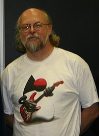
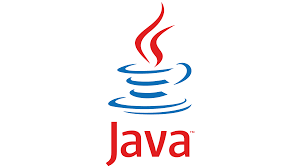

James Gosling
Científico de la computación
Biografía
Arthur James Gosling, conocido como el padre del
lenguaje de programación JAVA, nació el 19 de
mayo de 1956 cerca de Calgary, Alberta, Canadá.
Se graduó en ciencias de la computación por la
Universidad de Calgary en 1977 y obtuvo su
doctorado en la Universidad Carnegie Mellon en
1983. A partir de 1984, Gosling desempeñó un
papel destacado en la compañía estadounidense
Sun Microsystems, donde ocupó el cargo de
vicepresidente hasta que ésta fue comprada por
Oracle. Abandonó la compañía el 2 de abril de
2010. Luego, se unió a Google el 28 de marzo de
2011, donde continuó su carrera. En 2015, fue
galardonado con la medalla John Von Neumann de
la IEEE por sus contribuciones al desarrollo
informático.

Aportes
Los aportes de James Gosling al mundo de la informática son muchos.
Su invención de Java revolucionó la programación informática al
proporcionar un lenguaje de programación versátil y portable. Java se
convirtió en uno de los lenguajes de programación más populares y
ampliamente utilizados en el mundo, especialmente en el desarrollo de
aplicaciones empresariales y en la programación de dispositivos
móviles. Después de la adquisición de Sun Microsystems por parte de
Oracle en 2010, Gosling continuó trabajando en proyectos innovadores
en el campo de la informática. A lo largo de su carrera, James Gosling
ha sido reconocido con numerosos premios y honores por sus
contribuciones al mundo de la informática, incluido el premio Grace
Murray Hopper Award en 2002, otorgado por la Association for
Computing Machinery (ACM). Hoy en día, Gosling sigue siendo una
figura influyente en la comunidad informática, y su legado perdurará
como uno de los pioneros más importantes en el desarrollo de
tecnologías informáticas clave que han transformado la forma en que
interactuamos con la tecnología en la era moderna.

James Gosling es considerado un personaje importante y relevante
debido a su papel como el creador del lenguaje de programación Java.
Java ha tenido un impacto significativo en la industria de la tecnología
al proporcionar un lenguaje versátil que se ejecuta en múltiples
plataformas. Su contribución ha influido en el desarrollo de una amplia
gama de aplicaciones informáticas, desde dispositivos móviles hasta
sistemas empresariales complejos